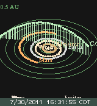
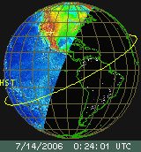
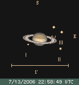
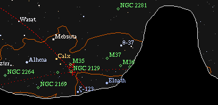
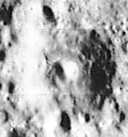

|  |
(icon background by Galaxy Photography) The Serious* Interactive Astronomical Software Ephemeris Version 3.7.7 |  |
|  |  |  |
* "It takes some getting used to, but it's worth the effort. Once you
understand its peculiarities, you'll find that XEphem can do just about
anything you ask ...". Quoted with permission from
Astronomy Hacks
Copyright © 2005 Robert Bruce Thompson and Barbara Fritchman Thompson.
| |
| XEphem \eks-i-'fem\ n. [X Window System + Ephemeris] (1990) : | |
| 1. |
From Xceptional Astronomical Software by Jeff Medkeff, Sky and Telescope magazine February 2000, page 65: "XEphem, the brainchild of programmer Elwood Downey, is a star-charting, sky-simulating, ephemeris-generating celestial virtuoso that can do just about everything ... what's not to like?" From X Marks the Spot by David Ratledge, Sky and Telescope magazine August 2002, page 67: "If everyday sky charting is all you want, then one of several more user-friendly and cheaper Windows packages will suffice. However, that's not what XEphem is all about. It's for those who need that little extra and are willing to put the effort in to achieve it. If, like me, you are in that category then I would certainly recommend XEphem."
|
| |
| 2. |
The scientific-grade interactive astronomical ephemeris software
package for UNIX-like* systems. Written in C, X11 and Motif with full
source code
freely available, easily ported to systems including:
* XEphem does not run under native Windows but it works fine using a virtualization toolkit such as Virtualbox and a free linux distro such as OpenSUSE. |
| |
| Thank you for your interest in XEphem. Feel free to browse by clicking on the screen shots above and from the panel at the left for more information. For specific questions, contact us at xephem@ClearSkyInstitute.com. | |